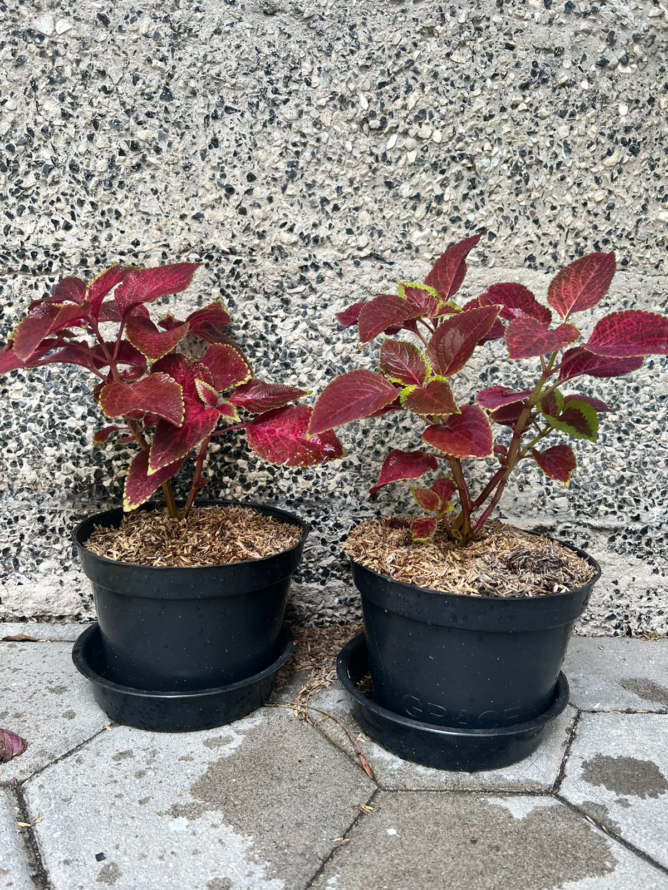

BAB III
PELAKSANAAN HASIL PENELITIAN
3.1 Pembuatan dan Fungsi Bahan Pestisida
Berikut merupakan alat dan bahan, langkah-langkah serta fungsi dari bahan yang digunakan dalam pembuatan pestisida alami.3.1.1 Alat dan Bahan
Alat yang digunakan dalam percobaan ini:
- Sendok makan
- Wadah
- Botol spray
- Perasan
- Jeruk nipis
- Gula pasir
- EM4 (larutan efektif mikroorganisme 4)
- 4 liter air bersih
Gambar 3.1.1 – Alat dan bahan yang digunakan
3.2 Fungsi Bahan
Berikut merupakan fungsi dari setiap bahan yang kami telah gunakan dalam pembuatan pestisida organik.3.2.1 Pengaruh Jeruk Nipis Terhadap Tumbuhan
Ekstrak daun jeruk nipis mengandung beberapa metabolit sekunder antara lain saponin, minyak atsiri, dan limonoid. Ketika kandungan metabolit sekunder ini dapat membasmi hama serangga. Tiap metabolit ini memiliki fungsi dan perannya masing-masing.
3.2.2 Pengaruh EM4 Terhadap Tumbuhan
Penggunaan mikroorganisme efektif (EM) merupakan salah satu teknologi yang dapat digunakan dalam usaha pengelolaan pertanian yang mampu mengurangi pengaruh negatif terhadap lingkungan. EM4 terdiri atas kultur campuran mikroorganisme bermanfaat dan hidup secara alami serta dapat diterapkan sebagai inokulum untuk meningkatkan keragaman mikroorganisme tanah dan tanaman (Higa & Parr 1997).
EM4 mengandung 90% bakteri Lactobacillus sp. (bakteri penghasil asam laktat) pelarut fosfat, bakteri fotosintetik, Streptomyces sp, jamur pengurai selulosa dan ragi. EM4 merupakan suatu tambahan untuk mengoptimalkan pemanfaatan zat-zat makanan karena bakteri yang terdapat dalam EM4 dapat mencerna selulosa, pati, gula, protein, lemak (Surung, 2008).
3.2.3 Pengaruh Gula Pasir Terhadap Tumbuhan
Di bidang pertanian, belum banyak orang yang mengetahui manfaat gula. Padahal, keberadaannya sangat bermanfaat guna meningkatkan kualitas hasil pertanian. Dimana larutan gula tersebut bisa digunakan sebagai salah satu bahan dasar pembuatan pupuk organik yang membantu meningkatkan kualitas pertanian. Salah satu manfaat larutan gula ini adalah digunakan sebagai bahan campuran pembuatan kompos sistem aerob. Kompos sistem aerob ini bisa dibuat tanpa harus menggunakan cetakan serta tutup plastik hitam sebagaimana kompos sistem anaerob. Larutan gula juga berfungsi untuk memperoleh energi bagi perkembangbiakan jumlah EM yang diaktifkan selama proses pembuatan kompos. (Witono, 2016).
3.3 Langkah Kerja
- Menyiapkan alat dan bahan.
- Memeras 5 buah jeruk nipis dan memanfaatkan airnya.
- Mencampur dan mengaduk semua bahan hingga rata. Mendiamkan di wadah tertutup selama 4-5 hari.
- Menggunakan perbandingan 2 sendok makanan larutan dengan 1 liter air untuk penggunaan larutan pestisida organik dari jeruk nipis.
- Memindahkan pestisida ke wadah spray agar mudah dipakai.
3.3 Steps
- Prepare tools and materials.
- Squeeze 5 limes, then use the lime water.
- Clean 20 pieces of lime leaves, then pound until smooth.
- Mix and stir all ingredients until evenly distributed. Let it set for 4 to 5 days in a closed container.
- For each use of an organic pesticide solution from lime, use a ratio of 2 tablespoons of solution to 1 liter of water.
- Transfer it to a spray container for easy use.
3.4 Pelaksanaan Penelitian
Tempat penelitian yang dipilih dan digunakan dalam penelitian ini adalah lingkungan Sekolah Menengah Pertama Santa Ursula Jakarta yang berlokasi di Jalan Pos No. 2, Pasar Baru, Jakarta Pusat. Tepatnya di lapangan Lourdes, bagian sudut bersebelahan dengan tempat cuci tangan. Dua tanaman diletakkan di sudut tersebut, dengan sinar matahari yang memadai untuk pertumbuhan tanaman.Perkembangan tanaman akan dilihat setiap hari, dengan pestisida serta air untuk pertumbuhan tanaman. Peneliti melakukan pengumpulan data selama 4 minggu, dimulai dari tanggal 24 Januari s.d. 15 Februari
Data penelitian diperoleh melalui pengamatan secara rutin dan menggunakan dokumentasi berupa foto. Dua tanaman yang sama diletakkan bersebelahan di tempat yang cukup cahaya dan disiram dengan jumlah air yang sama, diberi pupuk yang sama, namun salah satu tanaman diberikan satu (1) semprotan pestisida organik setiap hari, kontras dengan tanaman yang lain yang tidak menggunakan pestisida sama sekali.
Berikut adalah hasil dari percobaan dalam bentuk gambar:
Gambar 3.4.1 – Foto tanaman 24 Januari, kiri diberikan pestisida dan kanan kontrol
Gambar 3.4.2 – Foto tanaman 31 Januari, kiri diberikan pestisida dan kanan kontrol
Gambar 3.4.3 – Foto tanaman 8 Februari, kiri diberikan pestisida dan kanan kontrol
Berikut ini data pengamatan kami:
Playlist - !!
Guess what we made to accompany you scrolling through our report! Yes, we made a playlist full of our top picks!
Gallery-!!
